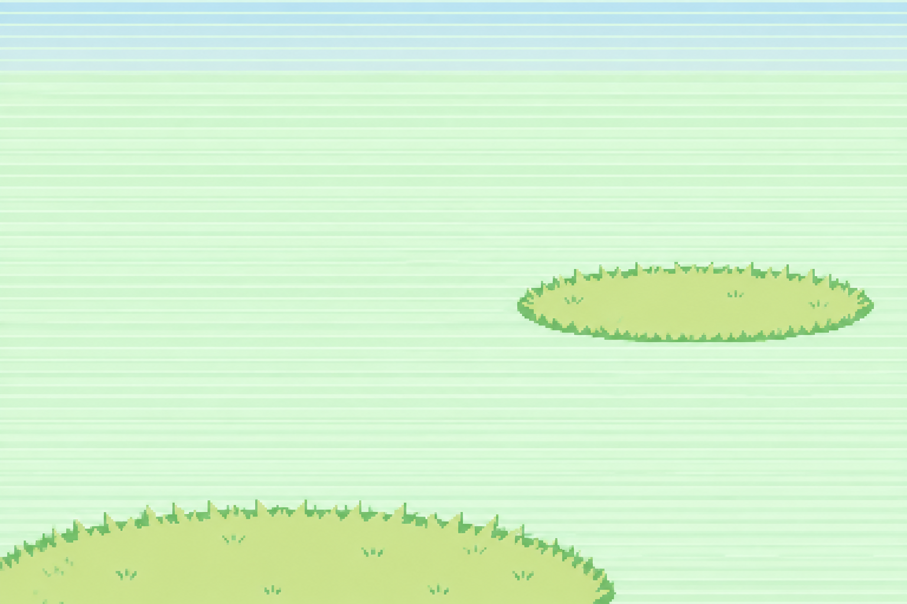
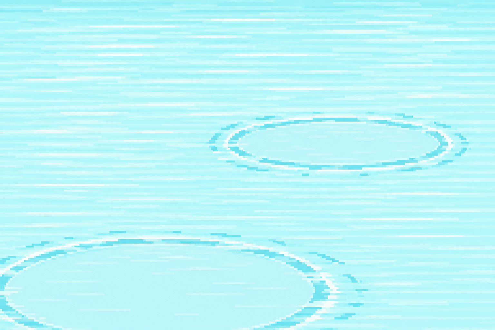

<!doctype html><html lang="ja"><meta charset="utf-8"><meta name="viewport" content="width=device-width,initial-scale=1"><title>ガオン・バトル背景 第2版</title><style>body{margin:0;background:#152b32;color:#ecf2e6;font:16px/1.8 system-ui}main{max-width:1200px;margin:auto;padding:32px 24px}h1{font-size:28px}p{color:#bdd1cc}.grid{display:grid;grid-template-columns:repeat(auto-fit,minmax(300px,1fr));gap:24px}figure{margin:0;background:#294349;padding:16px;border-radius:12px}img{width:100%;display:block;image-rendering:pixelated}figcaption{padding:12px 4px 0}a{color:#a9e7ce}</style><main><h1>バトル背景 · 第2版</h1><p>淡い横線と足場だけのシンプルな背景です。ガオン・HP表示・コマンド欄はゲーム側で重ねます。ゲームへの組み込みは未実施です。</p><div class="grid"><figure><figcaption>草むらのバトル</figcaption></figure><figure><figcaption>川の中のバトル</figcaption></figure></div><p><a href="preview.html">マップ素材へ</a></p></main></html>
